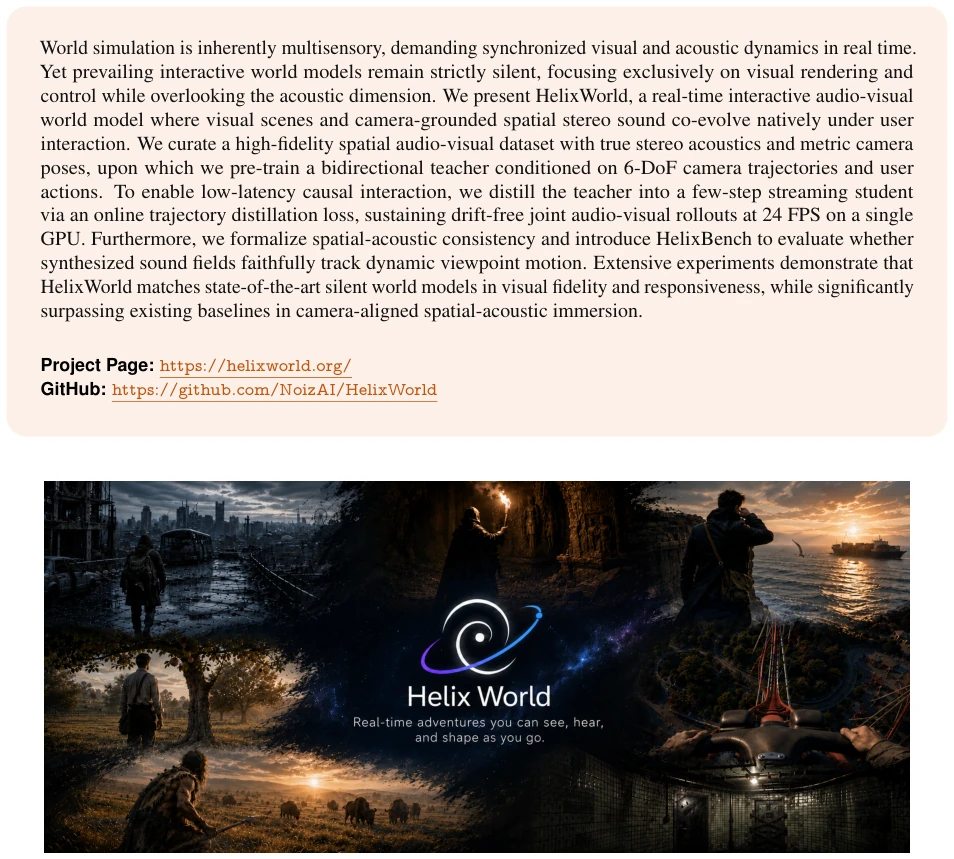
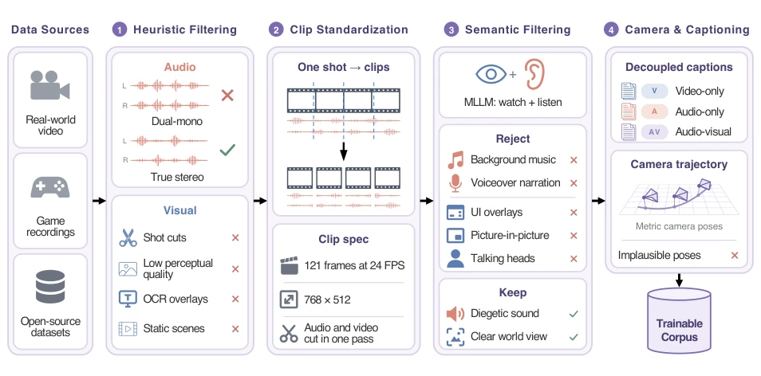
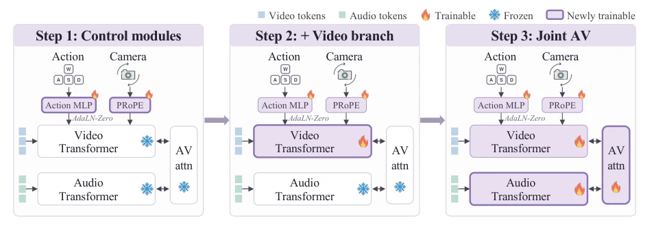
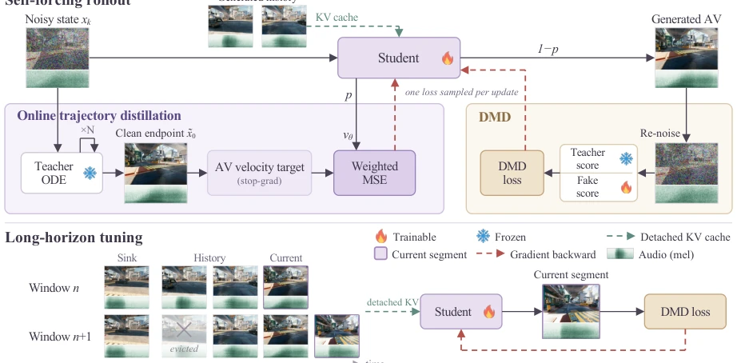
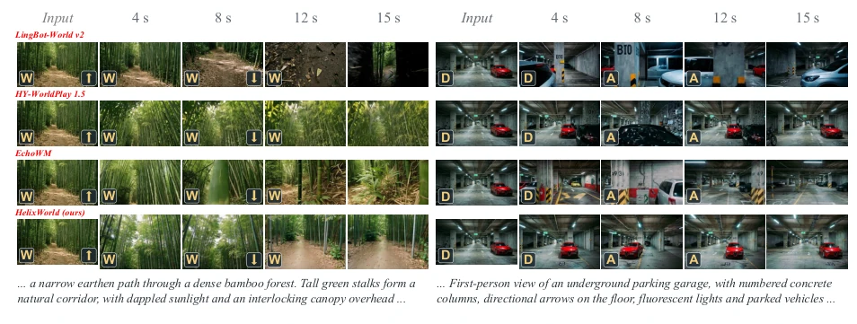
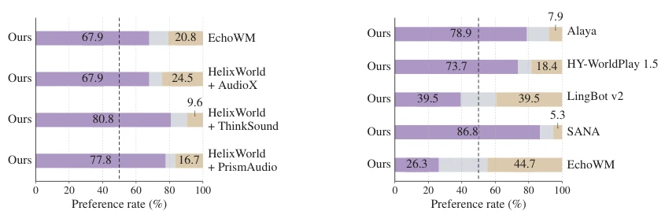
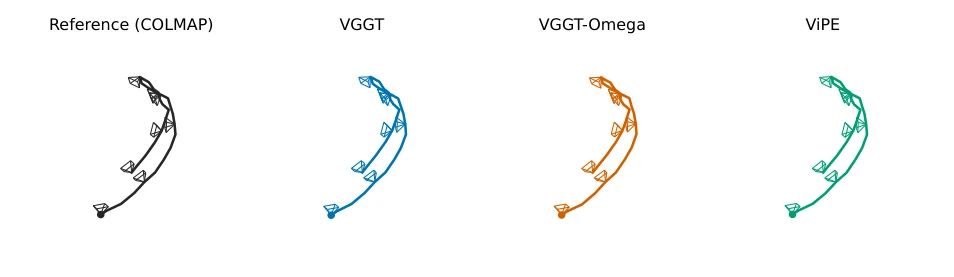
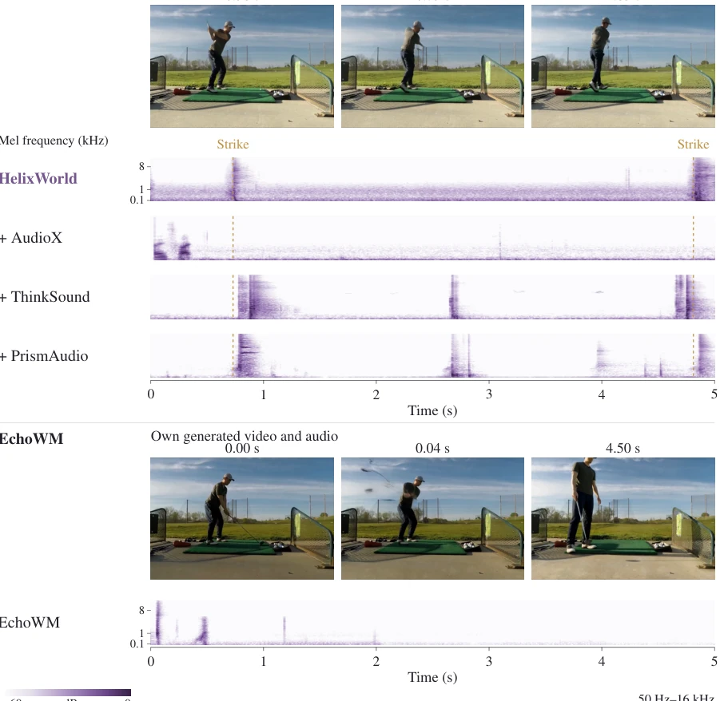
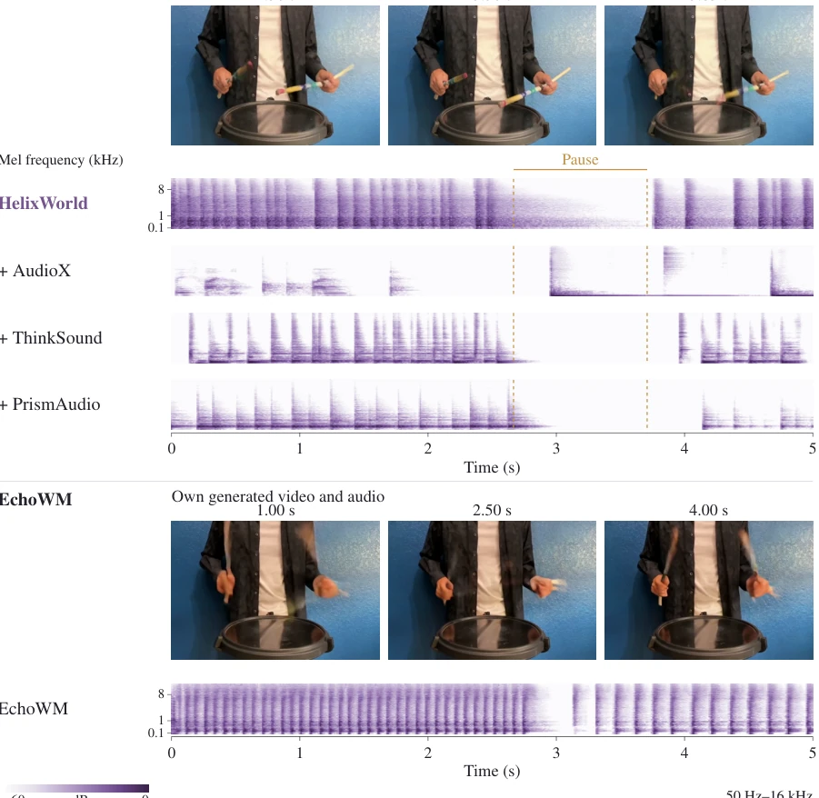
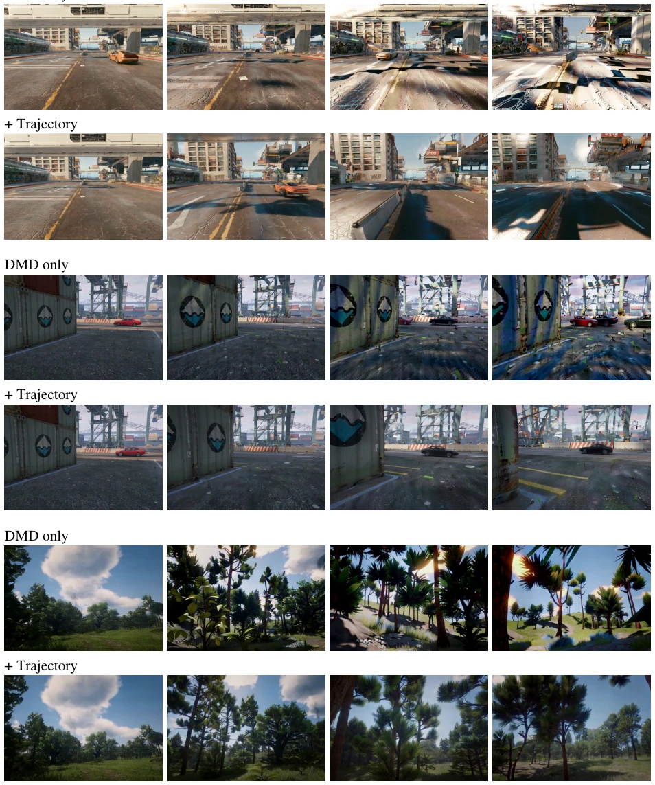

This paper forcibly equips silent world models with 'vocal cords'; HelixWorld attempts to synchronize video and spatial audio generation in real-time interaction. Although running at full 24 FPS on a single card is indeed impressive, the metric 'spatial audio consistency' sounds high-end, but the actual effect depends on the user's ears. The data cleaning pipeline is like sifting sand; only 73% usability rate is sifted out from 3.0k hours of data, with significant compute costs. The most interesting part is the 'online trajectory distillation', attempting to solve the drift problem of autoregressive generation, but whether the acoustic attenuation after long-sequence generation is truly cured depends on whether the 1015 cases of HelixBench are manually curated. Overall, it counts as filling the auditory shortcoming for Embodied AI, but there is still a distance from true 'immersion', after all, the current 'spatial sense' might just be the volume difference between left and right channels, and no in-depth verification of complex physical contact sounds is seen, for closed-loop control of embodied intelligence, the feedback value of sound has not been fully released.
Existing interactive world models [1, 37] mostly focus on vision, ignoring sound cues inevitably accompanying physical interaction, such as surface materials, contact forces, and off-screen events. Although EchoWM [52] attempts to add audio, it lacks camera-motion-aligned spatial acoustics, causing sound to fail to change with viewpoint. Cascaded Video-to-Audio models [6, 39] can generate sound but cannot perceive ego-motion, and serial latency hinders real-time interaction. Bidirectional foundation models [11, 13] lack external control interfaces; directly converting to causal autoregression leads to severe multimodal drift. Therefore, building a real-time model that natively couples camera trajectory and spatial audio is crucial, this is not only a sensory supplement but also key to physical consistency verification, helping to improve the perception closed-loop of embodied intelligence, allowing machines to truly 'hear' environmental changes.

Figure 1. HelixWorld. Real-time interaction across diverse worlds with synchronized video and camera-aligned spatial audio.
Overall adopts two-stage training: first train bidirectional Teacher, then distill causal Student. In terms of data, a 4.1k hour dataset containing real, game, and open-source data is constructed, undergoing four-stage cleaning including heuristic filtering, semantic filtering (MLLM), camera pose recovery (VGGT-Ω), etc., to ensure true stereo sound. Teacher stage injects 6-DoF camera trajectory via PRoPE [24], AdaLN-Zero [32] injects actions, utilizing cross-modal attention to bind visual geometry and acoustic features. Student stage introduces online trajectory distillation loss ($L_{traj}$), combining Self-Forcing [18] and long-horizon streaming fine-tuning. $L_{traj}$ directly supervises student velocity field and teacher probability flow ODE target, preventing cumulative error of long-sequence generation, cooperating with sliding KV cache, achieving drift-free generation at 24 FPS on a single card, solving the mode collapse problem caused by traditional DMD, ensuring visual and acoustic stability under long horizons.

Figure 2. Data pipeline. Raw video and audio pass four cost-ordered stages; surviving clips fork into parallel camera recovery and decoupled captioning branches to yield the trainable corpus.

Figure 3. Progressive condition injection. Three-stage training: optimize control modules with the backbone frozen, unfreeze the video branch, and jointly train the full audio-visual backbone.

Figure 4. Causal distillation pipeline. Top: Self-forcing updates stochastically alternate between online trajectory distillation and distribution matching. Bottom: Long-horizon tuning extends rollouts segment by segment via a sliding KV cache with initial sink frames and detached history.
Evaluated on HelixBench (1015 cases), covering dimensions such as navigation, viewpoint, events, etc. Baselines include EchoWM, LTX-2.3, and cascaded V2A models. Visual quality on WBench navigation set is on par with mainstream silent models, RTF reaches 0.77. In terms of audio, KL and FAD are better than EchoWM, spatial consistency score significantly leads. Ablation experiments show that progressive condition injection can reduce camera control error, online trajectory distillation effectively mitigates long-sequence visual drift (Fig 5). In user study (Fig 7), HelixWorld with audio receives majority preference, proving its spatial audio enhances immersion, but in silent mode it is slightly inferior to EchoWM. DeSync metric shows good synchronization, but slight attenuation remains under long sequences, indicating causal distillation still needs further optimization to maintain audio quality for ultra-long sequences.

Figure 6. Visual comparison under interactive control. HelixWorld retains scene structure during navigation (left) and motion reversal (right). Key overlays indicate controls.

Figure 7. User-study preferences. Purple indicates preference for HelixWorld, gray a tie, and beige preference for the baseline across full audio-visual rollouts (a) and muted video dynamics (b). Dashed vertical lines mark 50%.

Figure 8. Single-sample camera trajectory comparison. From left to right: COLMAP reference, VGGT, VGGT-Omega, and ViPE. All trajectories are aligned to the reference coordinate frame via Sim(3). Solid lines denote camera translation paths; schematic frustums indicate camera orientations.

Figure 10. Audio–visual synchronization during golf swings. Dashed lines mark the visible strikes in the shared video. HelixWorld’s acoustic transients coincide with both events.

Figure 11. Audio–visual synchronization during drumming. The marked interval is a visible pause. HelixWorld’s transients subside during the pause and resume with the motion; AudioX produces a transient during the pause.
其他图片Other Figures

Figure 9. Additional visual comparisons of trajectory distillation. Each pair shows DMD only (top) and with trajectory distillation (bottom).